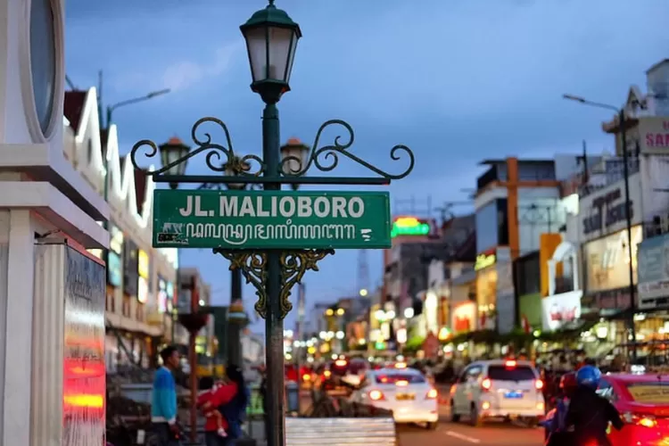

Malioboro

Jalan Malioboro adalah ikon wisata Yogyakarta, memanjang 2 kilometer dari Tugu Yogyakarta hingga Titik Nol Kilometer. Kawasan ini terdiri dari Jalan Margo Utomo, Jalan Malioboro, dan Jalan Margo Mulyo, membentang dari utara ke selatan.
Nama "Malioboro" memiliki beberapa versi asal-usul. Dipercaya berasal dari bahasa Jawa "maliabara" (dihiasi karangan bunga) atau nama kolonial Inggris "Marlborough". Malioboro telah menjadi pusat perniagaan sejak era Keraton Yogyakarta dan berkembang pesat di masa kolonial Belanda.Malioboro terkenal dengan berbagai toko, mulai dari batik, pernak-pernik, hingga kuliner khas Yogyakarta seperti gudeg. Pengunjung dapat menemukan berbagai souvenir dan oleh-oleh khas Yogyakarta di sini.
Jalan Malioboro sebenarnya hanya terbentang dari sisi selatan rel kereta api, di depan Hotel Grand Inna hingga berakhir di Pasar Beringharjo sisi timur. Dari titik ini, nama jalan berubah menjadi Jalan Margo Mulyo hingga Titik Nol Kilometer Yogyakarta. Jalan Malioboro menjadi batas antara Kemantren Gedongtengen dan Kemantren Danurejan, di mana sisi barat Malioboro adalah wilayah dari kemantren Gedongtengen, dan sisi timur Malioboro adalah wilayah dari kemantren Danurejan. Sedangkan seluruh sisi jalan Margo Utomo adalah wilayah dari Kemantren Jetis, dan sisi jalan Margo Mulyo adalah wilayah dari Kemantren Gondomanan.
Terdapat beberapa objek bersejarah di kawasan ini, antara lain Tugu Yogyakarta, Stasiun Yogyakarta, Gedung Agung, Pasar Beringharjo, Kantor DPRD DIY, Benteng Vredeburg, Hotel Grand Inna, Komplek Kantor Gubernur Daerah Istimewa Yogyakarta, dan Monumen Serangan Umum 1 Maret.
Jalan Malioboro terkenal dengan para pedagang kaki lima yang menjajakan kerajinan khas Jogja dan warung-warung lesehan di malam hari yang menjual kuliner Jogja seperti gudeg. Jalan ini juga terkenal sebagai tempat berkumpulnya para seniman yang sering mengekspresikan kemampuan mereka seperti bermain musik, melukis, happening art, pantomim, dan lain-lain.